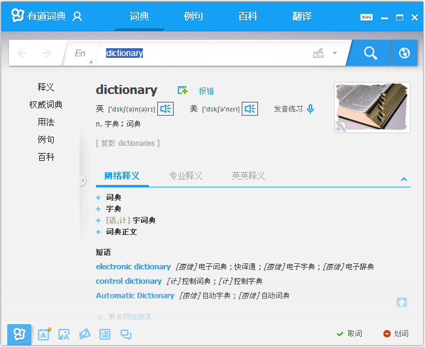
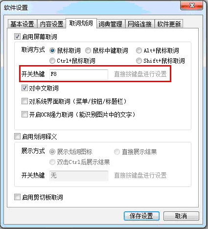

有道词典桌面版常见问题：
- 为什么我的有道词典不能单词发音？
- 为什么我的有道词典不能PDF取词？
- 我的词典屏幕取词热键“F8”和其他软件热键有冲突，怎么办？如何修改热键？
- 我在安装有道词典的过程中杀毒软件会弹出警告窗口，请问是怎么回事？
- 我在使用有道词典屏幕取词的过程中，有时候会出现取词错位的情况，请问应该怎么办？
- 为什么我的有道词典屏幕取词速度会比别人慢？
- 为什么我的有道词典不能在Foxit Reader2.1中PDF取词？
- 为什么我不能正常安装有道词典？
- 有道词典可以设置代理服务器地址吗？
- 我使用有道词典的环境是不能使用网络或者会遇到断网的，普通版有道词典不能满足我的需要怎么办？
1. 为什么我的词典不能单词发音？返回页顶
首先请确认您的电脑已经安装了最新版本的有道词典并正确地连接到了网络上，未联网时是不能使用单词发音功能的，请点击这里下载安装最新版本的有道词典。单词发音功能需要Flash程序支持，如果您没有安装Flash播放程序，请点击这里下载安装。
请注意，查询结果里面必须出现小喇叭图标才能发音，如果没有该图标，您看到的可能是简单查询结果，请输入回车或点击“查询”按钮查看详细查询结果。目前有道词典只支持英文单词和短语的发音，暂时不支持中文发音功能。

2. 为什么我的有道词典不能PDF取词？返回页顶
有道词典桌面版全面支持Adobe Reader、Acrobat Professional和Adobe Acrobat Standard的屏幕取词。如果您的PDF文档中不能屏幕取词，请按照以下方式尝试解决。
首先请确认您的电脑安装的是最新版本的有道词典，非官方渠道的“绿色版”有道词典不能正常PDF取词，请点击这里下载安装最新版本的官方标准版有道词典。
请确认您阅读的PDF文档是文本而不是图片，目前有道词典暂不支持对图片文档的取词。
您在安装或更新的过程中，可能没有关闭Adobe Reader或Acrobat Professional，请关闭Adobe Reader或Acrobat Professional，重启有道词典后，再试一次。
如果您使用的是Acrobat Professional，请查看您的任务管理器（Ctrl+Alt+Delete启动任务管理器），在进程框中找到一个叫做Autotray.exe的进程，结束该进程后重启有道词典；或者您可以手动把有道词典安装目录（默认为C:\Program Files\Youdao\Dict4）下的YodaoDict.api文件拷贝到Acrobat安装目录的plug_ins文件夹内。
如果您是非管理员权限的受限用户，请用管理员帐号登入windows并启动一次有道词典，或者您可以手动把有道词典安装目录（默认为 C:\Documents and Settings\您的用户名\Local Settings\Application Data\Youdao\Dict\Application\ 或 C:\Users\li\AppData\Local\Youdao\Dict\Application\）下的以版本号命名的目录中的YodaoDict.api文件拷贝到Acrobat安装目录的plug_ins文件夹内。
3. 我的词典屏幕取词热键“F8”和其他软件热键有冲突，怎么办？如何修改热键？返回页顶
有道词典屏幕取词热键默认设置为“F8”，如果出现与您的其他软件的热键有冲突的情况，请按照以下步骤更改词典屏幕取词热键设置：打开有道词典， 点击右上方程序菜单按钮，依次选择“设置->软件设置->取词划词”，在这里更改您的词典屏幕取词热键。

4. 我在安装有道词典的过程中杀毒软件会弹出警告窗口，请问是怎么回事？返回页顶
首先，有道词典桌面版在发布前都经过了严格的测试，从正常渠道下载的有道词典安装程序绝对不会带有任何病毒。如果您在安装有道词典的过程中杀毒软件弹出警告窗口，是因为您选择了同时安装有道工具栏，所以安全类软件会发出善意的提醒，这时您只需点击“通过”或“忽略”按钮即可继续正常安装。
有道工具栏是网易公司出品的另一款便捷好用的绿色软件，提供了搜索、截图、查词典、查看股票行情、拦截弹出窗口等丰富的功能，更多详细信息请访问这里。
6. 我在使用有道词典屏幕取词的过程中，有时候会出现取词错位的情况，请问应该怎么办？返回页顶
为了方便您的使用，有道词典桌面版提供了屏幕取词功能，并在绝大多数情况下能够做到快速精确。如果您在使用屏幕取词的过程中出现取词错位的情况，请您将出问题的取词文档或网页、取词错位位置截图、您所使用的操作系统及文本软件的版本号、以及当前使用的有道词典的版本号等信息发至 feedback@corp.youdao.com 信箱，有道的工作人员会查找原因并根据情况给您解答，帮助您解决问题。
7. 为什么我的有道词典屏幕取词速度会比别人慢？返回页顶
有道词典的屏幕取词速度与您的网速有关，在正常的网络环境下，屏幕取词响应时间不会超过1秒。如果您的有道词典屏幕取词速度比较慢，请您检查一下您的网络状况。另外，您也可以将您的ip地址发至feedback@corp.youdao.com邮箱，有道的工作人员会查找原因并尽量优化您的取词速度，如果您不知道您的ip地址，请点这里进行查询。
8. 为什么我的有道词典不能在Foxit Reader2.1中PDF取词？返回页顶
有道词典桌面版目前只支持Foxit Reader 2.2及其以上版本的屏幕取词，建议您点击这里将您的Foxit Reader升级到最新版本。
9. 为什么我不能正常安装有道词典？返回页顶
不能正常安装有道词典最常见的原因是您不是计算机管理员，有道词典1.2版本推出后支持非计算机管理员身份的安装，请点击这里下载安装最新版本的有道词典。
10. 有道词典可以设置代理服务器地址吗？返回页顶
有道词典1.1及其以下版本是直接使用IE默认代理服务器地址的，但不能设置帐号和密码。从1.2版本开始，有道词典支持直接设置代理服务器地址。您可以在“软件设置->网络连接->HTTP代理服务器”中设置代理服务器地址、端口以及帐户和密码。
12. 我使用有道词典的环境是不能使用网络或者会遇到断网的，普通版有道词典不能满足我的需要怎么办？返回页顶
有在离线断网情况下使用词典的用户，请点击这里下载有道词典本地增强版，本地增强版词库强大、释义全面，收录了21世纪大英汉词典和新汉英大辞典，另收录了16万条精选例句可以覆盖到用户的各类查询。